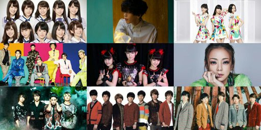
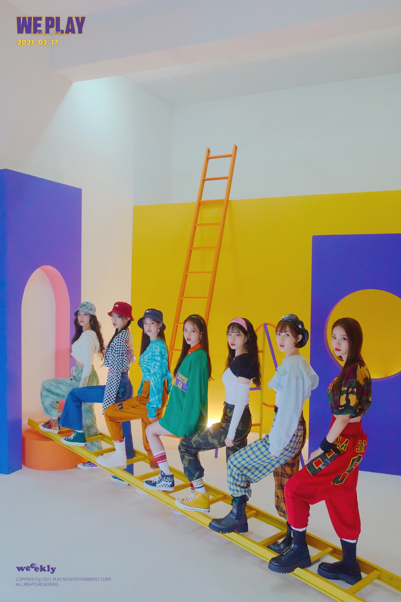

Top 10 Jpop Songs Recommendation 2021

What are the top Japanese songs 2021? If you are into Japanese songs, you are probably familiar with some of their songs. Their songs aren’t only about love, but also about hope, life, and expectations. In most cases, the lyrics are hopeful and positive. In some Japanese music charts, here are some of the Japanese most popular and favorite songs in 2021.
Read More >
Top EDM Songs for Workout
Looking to crank up your workout? It's electronic dance time. EDM will help you keep a steady pace on your run (BTW, download these 10 songs for a speedier run) or motivate you to go Above & Beyond (pun intended) no matter which workout you choose.
Read More >
Top K-Pop Girlgroups Songs 2021

Looking for the latest hits from K-pop girl groups? Here are the top K-pop girl group songs of 2021, ranked by fans everywhere. Featuring music from the hottest girl groups like Blackpink, (G)I-DLE, Aespa, and Mamamoo, you'll find everything from dance hits to EDM bangers to add to your K-pop playlist. What are your favorite K-pop girl group songs of 2021?
Read More >